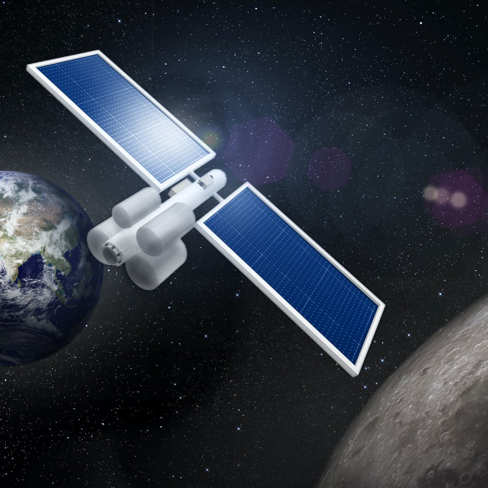

Satellite Applications Facilities (SAFs)
Friday August 06, 2021
Lothar Schüller, SAF Network Manager at EUMETSAT.
Satellite Applications Facilities are formed by a group of institutes (meteorological services and other institutions)
within EUMETSAT’s member states that are dedicated to processing satellite data for specific user groups or
application areas on behalf of EUMETSAT.
EUMETSAT created the innovative concept of the SAFs in the early 1990s to distribute activities, product development,
and software to other meteorological institutions within our member states.
This network strengthened even further our ties with our main users, while allowing us to benefit from their existing
expertise in specific areas and make use of their knowledge to deliver high-quality products.
I started working at EUMETSAT in 2004 as a scientific coordinator for the SAF network, which meant I was involved
with the SAFs 100% from the beginning of my career here. Coming from a university institute, I immediately felt the
difference of working for an operational organisation, where I learned how much work is needed to convert a
scientific idea into a reliable service for users. Around seven years ago, in the course of an organisational
restructuring, I assumed my current role as SAF Network Manager.
Read More..
Mining the Moon for Rocket Fuel to Get Us to Mars
Tuesday May 16, 2017
By Gary Li, Danielle DeLatte, Jerome Gilleron, Samuel Wald, Therese Marie Jones

orty-five years have passed since humans last set foot on an extraterrestrial body. Now,
the moon is back at the center of efforts not only to explore space, but to create a
permanent, independent space-faring society. The Conversation
Planning expeditions to Earth's nearest celestial neighbor is no longer just a NASA effort,
though the U.S. space agency has plans for a moon-orbiting space station that would serve
as a staging ground for Mars missions in the early 2030s. The United Launch Alliance, a
joint venture between Lockheed Martin and Boeing, is planning a lunar fueling station
(PDF) for spacecraft, capable of supporting 1,000 people living in space within 30 years.
Billionaires Elon Musk, Jeff Bezos and Robert Bigelow all have companies aiming to deliver
people or goods to the moon. Several teams competing for a share of Google's US$30 million
cash prize are planning to launch rovers to the moon.
We and 27 other students from around the world recently participated in the 2017 Caltech Space
Challenge, proposing designs of what a lunar launch and supply station for deep space missions
might look like, and how it would work.
Read More..
Space Shuttle
Monday
April 13, 2020
Russell D. Shaver, a former senior researcher at the RAND Corporation whose work influenced national policy debates on American military defense strategy, the economic feasibility of the early Space Shuttle program, and airport security after the 9/11 attacks, died March 31 in Fort Myers, Florida, from complications of Alzheimer's disease. He was 83.
Known for his ability to deliver hard truths in a good-natured fashion, Shaver spent 49 years at
RAND, including five years as associate director of research for Project AIR FORCE, founded
in 1946 to conduct research on topics of concern to the United States Air Force. Some of his
most consequential work involved highly classified threat reports called net assessments for
the Pentagon's legendary strategist Andrew Marshall.
“Russ Shaver was one of RAND's most astute analysts who helped to illuminate Soviet
thinking about and preparations for nuclear war,” said RAND President and CEO Michael
D. Rich.“His studies were widely read by national security officials and policymakers at the
highest levels of government.”
In 1983, Shaver and RAND colleague James Thomson analyzed the Reagan Administration's
Strategic Defense Initiative, a proposal to erect a system of x-ray lasers in space to detect and
deflect nuclear weapons. Over the next decade, the government spent $30 billion to develop the
program, dubbed “Star Wars” by critics, until it was canceled by President Clinton in 1993.
Read More..
Is Earth an Oddball?
Wednesday August 28, 2019
Pat Brennan is a science writer for NASA's Exoplanet Exploration Program. He joined JPL in 2015 after a 30-year career as a newspaper journalist.
One of the strangest things in the cosmos might be – us.
Among the thousands of planets confirmed to be in orbit around other stars, we’ve found nothing quite like our home planet. Other planets in Earth’s size range? Sure, by the bushel. But also orbiting a star like our Sun, at a comparable distance? So far it’s just one, lonely example. The one beneath our feet.
A big part of this is likely to be the technical difficulty of finding a sister planet. Our telescopes, in space and on the ground, find planets around other stars by two main methods: wobbles and shadows.
The “wobble” method, or radial velocity, traces the subtle back-and-forth motion as orbiting planets tug their star this way, then that, because of gravity. The larger the tug, the “heavier” the planet — that is, the greater its mass.
In the search for shadows, planet-hunting telescopes wait for a tiny dip in starlight as a planet crosses the face of its star — a crossing known as a “transit.” The bigger the dip, the wider the planet.
In both cases, large planets are much easier to detect than small ones. And in the case of transits, small, rocky planets about the size of Earth show up much better against very small stars known as red dwarfs. In a sense, they cast a bigger shadow that blots out proportionally more of a small star’s light, so instruments like NASA’s TESS space telescope can more readily find them. A Sun-sized star won't dim as much when an Earth-size planet passes by, making their transits harder to detect.,
Read More..
A passing star: our Sun's near miss
February 26, 2019 (By Pat Brennan).
,br>Artist's conception of Scholz's star, and its brown dwarf companion (foreground), during a flyby of our solar system some 70,000 years ago. Image credit: Michael Osadciw/University of Rochester
Stars jostling around the galaxy aren’t quite like a cosmic game of pool. But they do have occasional near misses as they speed past each other. Back when spears and stone points were the height of human technology, astronomers say, our solar system had a close encounter of the interstellar kind.
The brief visitor was Scholz’s star, and it might have grazed the outer edge of the solar system’s distant Oort Cloud about 70,000 years ago – carrying its companion, a likely brown dwarf, along for the ride.
It’s unclear whether the near miss was close enough to give objects in the Oort Cloud, our solar system’s halo of dormant comets, a gravitational nudge to fall toward the Sun. But the interstellar trespasser highlights a sometimes-forgotten reality: On long time scales, stars seem to fly around like sparks from a campfire, occasionally coming close enough to disturb each other’s cometary clouds.
Such close passes could have profound implications for exoplanets – planets orbiting other stars – and how they got where they are. At least some of the time, an interloper could become a thief, stripping a star of one or more planets – or vice versa.
Our solar system, too, might have been shaped and sculpted by stellar flybys.
Read More..
3. Our Milky Way Galaxy: How Big is Space? (By Pat Brennan).
4. Weird Worlds? Yes -- by the Trillion (By Pat Brennan).
A trip to the Outback – and to Earth's early life.
Thursday December 6, 2018
By Nick Siegler, chief technologist, NASA's Exoplanet Exploration Program(Nick Siegler, the chief technologist for NASA's Exoplanet Exploration Program, at Western Australia's Shark Bay. The dark, rounded forms in the background are stromatolites, one of Earth's most ancient lifeforms.)
This past July I joined a group of geologists, geochemists, microbiologists, and fellow astronomers on a tour of some of the best-preserved evidence for early life.
Entitled the Astrobiology Grand Tour, it was a trip led by Dr. Martin Van Kranendonk, a structural geologist from the University of New South Wales, who had spent more than 25 years surveying Australia’s Pilbara region. Along with his graduate students he had organized a 10-day excursion deep into the outback of Western Australia to visit some of astrobiology’s most renowned sites.
The trip would entail long, hot days of hiking through unmaintained trails on loose surface rocks covered by barb-like bushes called spinifex. As I was to find out, nature was not going to give up its secrets easily. And there were no special privileges allocated to astrophysicists from New Jersey.
The state of Western Australia, almost four times the size of the American state of Texas but with less than a tenth of the population (2.6 million), is the site of many of astrobiology’s most heralded sites. For more than three billion years, it has been one of the most stable geologic regions in the world.
It has been ideal for geological preservation due to its arid conditions, lack of tectonic movement, and remoteness. The rock records have in many places survived and are now able to tell their stories (to those who know how to listen).
Our trip began with what felt like a pilgrimage. We left Western Australia’s largest city Perth and headed north for Shark Bay. It felt a bit like a pilgrimage because the next morning we visited one of modern astrobiology’s highlights – the living stromatolites of Shark Bay.
Stromatolites literally mean “layered rocks”. It’s not the rocks that are alive but rather the community of microbial mats living on top. They are some of the Earth’s earliest ecosystems.
Read More..
The shape of Jupiter’s Great Red Spot is changing. Here’s why.
Thursday October 07, 2021
By Rae Paoletta
Editor, The Planetary Society, Our solar system’s most iconic storm is indubitably great, red, and spot-like. But exactly why it’s any of those things is a mystery that continues to evolve and multiply.
A new study published in the journal Geophysical Research Letters adds yet another piece to Jupiter’s puzzling Great Red Spot: The winds in its outermost stretches are speeding up and its shape is changing, becoming less cigar-like and more circular.
Does this mean the Great Red Spot is doomed to disappear? Not exactly. But some of the scientists involved in this latest research said they weren’t expecting what they found — and a concrete explanation is proving elusive.
“Nobody had predicted what was actually going on,” said the study’s co-author, Mike Wong, an astronomer at UC Berkeley. “When we found what we did, we struggled to explain it.
It’s impossible to predict the fate of the Great Red Spot. Even with our most powerful telescopes, we can’t peer deep into the storm and find its roots, and no spacecraft sent to Jupiter has been equipped to fully answer this question. Despite the gaps in our knowledge, we can try to understand what the storm’s past and present say about its uncertain future.
How are the Great Red Spot’s winds changing?
In a word: unevenly.
Back in 2019, amateur astronomers noticed pieces of the Great Red Spot “flaking” off the main body of the storm. The phenomenon led some scientists to question whether the Great Red Spot was disintegrating.
At that point, Simon, Wong and their team had already been combing through Hubble Telescope data from 2009 to 2020. The researchers studied the Great Red Spot’s velocity fields before and after the “flaking” observed in 2019; after much statistical testing, they confirmed that winds in the storm’s “outermost lane” or “high-speed ring” had increased by about 8%. Around the storm center, however, winds moved much more languidly.
“When we first looked at the GRS shrinking, we somewhat expected to see the winds increase, conserving angular momentum, like a figure skater pulling in her arms,” Simon said. “But that’s not what we measured. What we are seeing now is that both stretching and spinning faster happen, though we can’t yet say how continuous either trend is, or if this is part of the GRS eventually disappearing.
It’s important to note that these developments, though surprising, are actually pretty small. According to Wong, the team was only able to spot the shifts in wind speed because they were looking at a relatively large time window.
“If you had a couple of observations a couple of years apart you wouldn’t see it,” Wong said. “It’s only by looking over an 11-year period that you can see the change.

JUPITER'S GREAT RED SPOT FROM JUNO (DETAIL) Juno captured this view of Jupiter's Great Red Spot during its seventh perijove flyby on July 11, 2017 from an altitude of 9866 km. This flyby took Juno closer to the Great Red Spot than any previous mission to Jupiter.Image: NASA / SwRI / MSSS / Gerald Eichstädt / Seán Doran.
Read More..
NASA's next planet-hunting mission: 5 reasons TESS is going to be awesome.
Thursday April 5, 2018
By Elisa Quintana, astrophysicist,
NASA Goddard Space Flight Center.

The Transiting Exoplanet Survey Satellite (TESS), scheduled to launch on April 16, is NASA’s next mission to search for exoplanets – planets outside our solar system. It will look for small planets orbiting nearby, bright stars. TESS will rely on the transit method, looking for periodic dips in starlight that could reveal a planet passing in front of its star.
Here’s why TESS is going to be great:
Read More..
The Effects of Celestial Events Go Beyond Their Impact
Wednesday February 20, 2013
By Dave Baiocchi and William Welser IV,Adjunct Researcher; Professor, Pardee RAND Graduate School
While last week's meteor hit in Russia may seem like an extraordinary event, the truth is that the planet is always under bombardment. Earth is inundated with 100 tons of celestial particulate every day. Most of these particles are harmless: Due to their small size, they disintegrate upon entering the Earth's atmosphere. However, some objects survive passage through the atmosphere and have the potential to cause significant effects on the ground. While the event in Russia was caused by a medium-sized (10,000-ton) meteor, larger objects, like the asteroid 2012 DA14 that also passed near Earth last week, have the potential to be significantly more damaging.
To date, scientists have discovered 11 significant, kilometer-class craters on the planet caused by large-scale collisions with asteroids. The most recent (and the smallest!) is Meteor Crater, which is about 40 miles east of Flagstaff, Arizona. The crater is 0.75 miles in diameter, and it was created 49,000 years ago when an asteroid struck the surface. The largest known crater is a bowl-shaped cavity 125 miles in diameter buried under the Yucatan; the impact is believed to have caused the extinction of 50 percent of life on Earth at the time (including the dinosaurs).
The event over Russia illustrates some of the complex issues associated with a celestial-body event. First, these events don't happen very frequently, so the general public is mostly unaware of what these events look like or how to react. Most ongoing scientific efforts are focused on predicting the areas of scorched earth or designing schemes to intercept future asteroids that could pose an existential threat to Earth. But the shattered windows and injuries in Russia show that beyond the immediate impact point there is a much wider effects radius that should be considered.
Read More..
Debris Poses Increased Threat to Exploration
Friday May 16, 2014
by William Welser IV and Dave Baiocchi

In the early days of the Space Age, launching and operating a satellite was a lot like driving on an empty Texas Motor Speedway: Satellite operators didn't have to worry about traffic because there weren't that many other vehicles in the way.
Today, every satellite launch and maneuver is carefully coordinated because some orbits are strewn with the space-based equivalent of blown tires, abandoned vehicles, loose gravel and, of course, other traffic.
The fact is that Earth's orbit is littered with hundreds of thousands of debris objects larger than a centimeter. With orbital speeds that can exceed 17,000 miles per hour, even a small grain of sand can spell doom for an active satellite.
Debris therefore poses a real threat to our continued use of space in the most popular
The increased congestion in space is made more dire by the fact that the number of people who rely on space for communication, commerce, weather and navigation is increasing at a dizzying rate.
For example, in December 1994, the satellite TV market had 570,000 customers. Today, that number has grown to more than 35 million.
What is being done to mitigate the risk posed by debris? It depends on who you ask. Space-faring nations and commercial space firms have risk tolerances that typically align with their dependency on space. Those countries or companies that depend heavily on their space assets are more likely to be aware of the risk — and take steps to address the problem.
Read More..
Some Other Space Blogging Websites :
1. NASA Blogs.2. The RAND Blogs.
3. McAuliffe-Shepard Blogs
4. The Planetry Articles.
Space Scientists And Space Images:
Claudius Ptolemy (85-165)

Claudius Ptolemy (AD 90-168) lived in Egypt but possessed Greek ancestry. As a mathematician, geographer and astronomer, he authored several scientific texts which had considerable impact on Western intellectual thought.
In the 2nd century, Ptolemy published the Almagest, a comprehensive treatise on the movements of the stars and planets. It expanded Hipparchus’ geometric model of celestial motions, utilizing epicycles and eccentric circles in a geocentric theory which placed the Earth at the center of the solar system. This Ptolemaic system presented tables of information allowing convenient predictions of planetary locations. Ptolemy also catalogued 48 constellations, the names of which are still in use at present.
Ptolemy’s writings stood as authoritative for more than twelve hundred years. However, his model, which was incorrect, later fell out of use as the heliocentric view of the solar system came into being.
Few details about Ptolemy’s life survived to the present day.
Nicolaus Copernicus (1473-1543)
Nicolaus Copernicus (1473-1543) shattered the long-held notion that the Earth was the center of the solar system, proposing a heliocentric (sun-centered) model instead.
Copernicus, of Poland, felt the Ptolemaic view of the planets traveling in circular orbits around the Earth was over-complicated with many smaller circles, epicycles, needed to explain the intermittent retrograde motion of the planets (in which they appear to move in the opposite direction of the the stars). Copernicus published his book, De Revolutionibus Orbium Coelestium ("On the Revolutions of the Heavenly Spheres") when he was 70 and lay dying.
His ideas took almost a hundred years to gain credence, but Galileo's 1632 assertions that the Earth orbited the sun built upon the Polish astronomer's work, cementing the Copernican revolution.
Dr. Vikram Ambalal Sarabhai (1963-1971)

Dr. Sarabhai was considered as the Father of the Indian space program; He was a great institution builder and established or helped to establish a large number of institutions in diverse fields. He was instrumental in establishing the Physical Research Laboratory (PRL) in Ahmedabad : after returning from Cambridge to an independent India in 1947, he persuaded charitable trusts controlled by his family and friends to endow a research institution near home in Ahmedabad. Thus, Vikram Sarabhai founded the Physical Research Laboratory (PRL) in Ahmedabad on November 11, 1947. He was only 28 at that time. Sarabhai was a creator and cultivator of institutions and PRL was the first step in that direction. Vikram Sarabhai served of PRL from 1966-1971.
He was also Chairman of the Atomic Energy Commission. He along with other Ahmedabad-based industrialists played a major role in the creation of the Indian Institute of Management, Ahmedabad.
The establishment of the Indian Space Research Organization (ISRO) was one of his greatest achievements. He successfully convinced the government of the importance of a space programme for a developing country like India after the Russian Sputnik launch. Dr. Sarabhai emphasized the importance of a space program in his quote:
"There are some who question the relevance of space activities in a developing nation. To us, there is no ambiguity of purpose. We do not have the fantasy of competing with the economically advanced nations in the exploration of the moon or the planets or manned space-flight. "
"But we are convinced that if we are to play a meaningful role nationally, and in the community of nations, we must be second to none in the application of advanced technologies to the real problems of man and society."
Aluru Seelin Kiran Kumar
Mr Alur Seelin Kiran Kumar, Distinguished Scientist (Apex) and Director, Space Applications Centre, Ahmedabad, assumed the office of the Secretary, Department of Space, Chairman, Space Commission and Chairman, Indian Space Research Organisation (ISRO) on January 14, 2015.
Mr Kiran Kumar is a highly accomplished space scientist and engineer with a distinguished career spanning over four decades in ISRO in the satellite payload and applications domains.
He has made immense contributions to the design and development of Electro-Optical Imaging Sensors for Airborne, Low Earth Orbit and Geostationary Orbit satellites starting from Bhaskara TV payload to the Mars Orbiter Mission payloads.
Mr Kiran Kumar was instrumental in evolving the successful strategy for steering the Mars Orbiter Spacecraft towards planet Mars as well as its Mars Orbit Insertion. He has also made significant contributions for evolving the observation strategy encompassing land, ocean, atmospheric and planetary studies.
Mr Kiran Kumar is an alumnus of National College, the esteemed educational institution of Bangalore. He obtained his Physics (Honours) Degree from Bangalore University in 1971 and later obtained his Master’s degree in Electronics from the same university in 1973, and thereafter his M.Tech Degree in Physical Engineering from the Indian Institute of Science, Bangalore in 1975.
Galileo Galilei (1564–1642)
Galileo, born in Pisa, Italy, made numerous scientific discoveries. He famously proved that all falling bodies fall at the same rate, regardless of mass. Further he developed the first pendulum clock.
Galileo experimented with and refined telescopes (though he did not invent them, as is often incorrectly thought). He is perhaps best known for discovering the four most massive moons of Jupiter, now known as the Galilean moons.
Based on his telescope research, Galileo supported the Copernican heliocentric model of the solar system, publishing his arguments in "Dialogue Concerning the Two Chief World Systems," during 1632. The ruling Catholic church forced Galileo to recant these theories, and was kept under house arrest for the remaining nine years of his life. Today his legacy lived on in the Galileo spacecraft which probed Jupiter.
Albert Einstein (1879–1955)
Albert Einstein (1879–1955) of Germany stands as the preeminent physicist of the twentieth century. Though he did not practice observational astronomy as in peering through telescopes, his theories of relativity extended so far — to the entire universe, in fact — they forever changed astronomy.
Einstein’s first revolutionary innovation came in the form of his special theory of relativity which states that the laws of physics are the same everywhere in the universe. Further, the speed of light is a constant. A great deal of modern physics revolves around these ideas. Einstein determined that the faster an object moves, the more massive it becomes, giving rise to his famous equation: E=mc^2, where E is energy, m is mass and c is the speed of light.
Further expanding those ideas, Einstein developed general relativity, which states space and time curve near a massive object, distorting the fabric of space-time. he published the general theory of relativity in 1916.
Einstein received the 1921 Nobel Prize in physics, among many other awards and honors. His distinctive appearance, in particular his flowing hair, made an indelible impression upon world society, serving as a template for eccentric scientists and geniuses in fiction.
Space Images :
Stars orbiting the black hole in the center of our galaxy
The image of M87 shows what a black hole’s event horizon looks like. This GIF is a testament to the amazing power of black holes.
This is a timelapse of 20 years of observations from the European Southern Observatory’s Very Large Telescope looking at stars in orbit around the black hole at the center of our own galaxy, called Sagittarius A*. And yes, the stars — some more massive than our sun — orbit the black hole, like our planet orbits the sun. (The black hole isn’t seen in this image. But look at the center of the image to see a star doing a complete loop around an empty bit of space.)
One of the stars in this array, called S2, recently passed by the black hole at a speed greater than 15.5 million miles per hour. That’s more than 4,300 miles every second, or nearly three percent of the speed of light. Scientists recently used this observation in a test that, once again, proves Albert Einstein’s theory of gravity is correct.
And here’s a cleaner, illustrated version of similar observations. The orbital path of the star S2 is outlined in yellow.
Jaw-dropping images of Jupiter, sent back by Juno
On July 4, 2016, NASA’s Juno spacecraft arrived at Jupiter, traveling at a blistering 130,000 miles per hour.
Since then, as it orbited the largest planet in our solar system, Juno has revealed many secrets. They include enormous new cyclones swirling around the planet’s poles, a magnetic field that’s much more variable than expected, a belt of ammonia encircling Jupiter’s equator, and some evidence that Jupiter’s core is not as dense and compact as once thought.
Juno is delivering unprecedented, beautiful portraits of Jupiter. The images processed by NASA and citizen scientists are arresting: one part van Gogh, one part Pillars of Creation. Jupiter’s clouds have a stormy, gauzy quality, like cream swirling in the largest imaginable cup of coffee. Add to that the awesome size of what’s in them: Even small details on Jupiter can be larger than the entire Earth.
Consider the image above of Jupiter’s Great Red Spot. You could fit three Earths inside its vortex.
This is the very first image of a black hole
In April 2019, an international collaboration of scientists called the Event Horizon Telescope told the world that, for the first time, humanity has peered into the edge of a black hole.
The supermassive black hole is at the center of the Messier 87 (M87) galaxy, 53.49 million light-years away. The black hole, called M87, is massive, some 6.5 billion times the mass of our sun, all contained in a single point of infinite density.
In the image, the visible reddish and white light surrounding the black hole is material being destroyed by its immense gravity. That light encircles the photon orbit, a region beyond which light could conceivably escape from but is unlikely to. Within that photon orbit is the event horizon, the region beyond which no light can escape.
As you look at this image, know that this isn’t an object. This is a shadow, a sink. The light in the center gets sucked out of our view irretrievably. The absence in the image means something has left our observable universe. It’s a truly remarkable moment for humans to be able to see something so enigmatic, so far away, and so incredibly difficult to capture.
The solar eclipse inspired millions to stop and look at our star, the sun
When people write the history of the past decade in the United States, they’ll mention all the moments of division, the conflict, and the bleak status of our polarized politics. I hope they also include a bit about the one moment nearly all Americans were unified.
On August 21, 2017, 88 percent of Americans — 216 million people — took time to witness a solar eclipse that bisected the continental United States. It was a stunning moment, when millions of us were awestruck by the same rare phenomenon.
The above photo of the eclipse was taken in Chester, Illinois. But a similar view could be found anywhere along the eclipse’s path between Oregon and South Carolina.
Hubble’s eXtreme Deep Field reminds us how impossibly large the universe is

Everywhere in the universe we look, there are vast discoveries to be found.
The above image is the Hubble space telescope’s eXtreme Deep Field observation, published in 2012. The image is the result of combining 1,000 exposures of a teeny tiny patch of sky taken over 10 years. The image contains 5,500 galaxies found in a portion of the night sky that’s smaller than one-tenth the width of the moon. As the Hubble website explains, this is just “a 30 millionth of the whole sky.” So in every thumbnail-sized area of the sky, there’s untold numbers of galaxies, stars, planets, and possibly life. It’s mind boggling, and awesome.
A solar system is born

In 2014, the radio ALMA observatory in Chile captured this image of a star 450 light years away. The star is at the center of the image, but surrounding it are rings of material left over from the birth of the star. (Like the planet Saturn has rings, stars can have rings, too).
Looking at the image, astronomers have found evidence that planets are forming out of the material in those rings. This is the beginning of an entire solar system, perhaps one not so different than ours. When we look at the birth of this solar system, we’re looking at a process that likely birthed our own.
The Curiosity Rover takes a selfie on Mars
In 2012, the Curiosity Rover touched down on the surface of Mars, after a perilous journey on what NASA dubbed a skycrane (the rover was too heavy to land via parachutes, so NASA used rockets). And ever since, it’s been hard at work, investigating Mars for signs of life and probing its geologic history.
The above picture is a selfie (one of many) taken by the rover in 2015. In its time on Mars, Curiosity has confirmed that the planet used to be home to flowing water, with rivers and lakes, and had a past where the planet could have been hospitable to life.
In July 2020, NASA will launch the Mars 2020 rover — a vehicle similar to Curiosity — to an ancient dried-up river delta on the Martian surface, looking for more clues to piece together the natural history of the red planet.